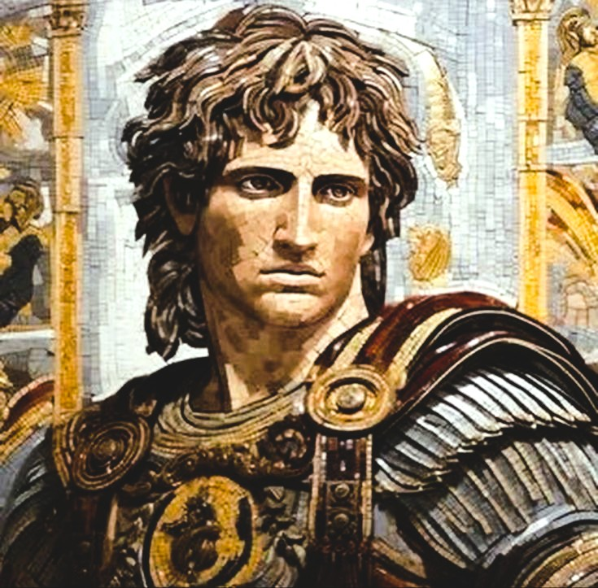
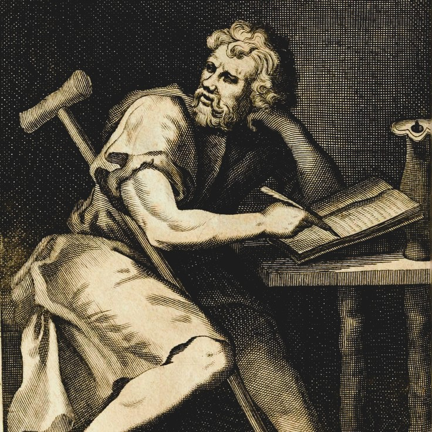
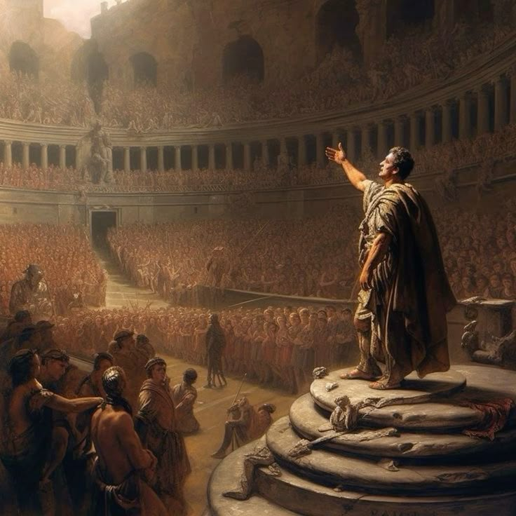
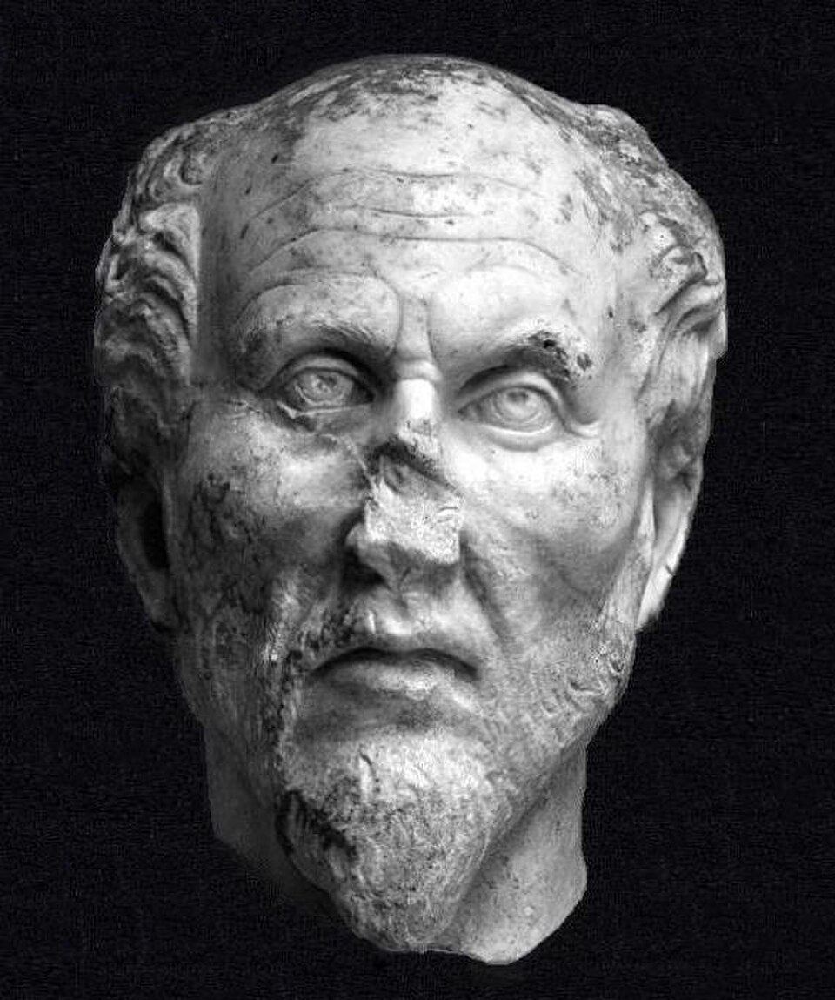
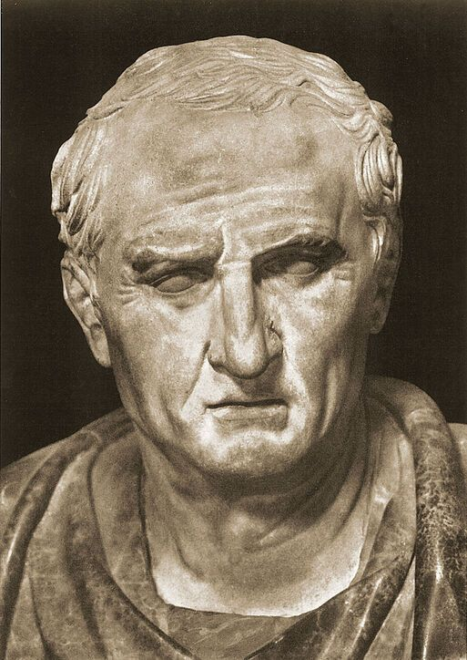

From the death of Alexander the Great to the transformation of the
ancient world — a period in which philosophy became, more than ever, a
practical guide to happiness, tranquillity, virtue, knowledge, and the
meaning of human life.
Introduction
Hellenistic and Roman philosophy developed during one of the most
politically turbulent and culturally interconnected periods of the
ancient world. After the death of Alexander the Great in 323 BCE, the
relatively independent Greek city-states that had provided the setting
for thinkers such as Socrates,
Plato, and
Aristotle gave way to vast kingdoms and,
eventually, the expanding power of Rome. Philosophy therefore entered a
new historical world. Thinkers continued to investigate logic, nature,
and metaphysics, but many schools placed increasing emphasis on a
practical question that became especially urgent in an uncertain age:
how should an individual live well in a world that cannot be completely
controlled?
The period produced several of antiquity's most influential
philosophical movements. Stoicism taught that human flourishing depends
upon virtue and the rational acceptance of what lies beyond one's
control. Epicureanism argued that happiness requires freedom from
unnecessary fear and the intelligent cultivation of simple pleasures.
Skepticism challenged claims to certainty and explored the possibility
of tranquility through the suspension of judgment. Later Roman thinkers
adapted these traditions to questions of duty, politics, mortality, and
personal character.
This page follows that history through the major philosophical schools
that emerged after the classical Greek period and developed across the
Hellenistic kingdoms and the Roman world. It begins with the historical
transformation that followed Alexander's conquests, then examines
Stoicism,
Epicureanism,
Skepticism, and other
important traditions before turning to the distinctive role played by
Roman philosophers such as Cicero, Seneca, Epictetus, and
Marcus Aurelius. Together, these
movements transformed philosophy into a powerful discipline for
understanding nature, confronting suffering, and shaping the conduct of
everyday life.
Hellenistic and Roman philosophy was not simply a continuation of Plato
and Aristotle. It created new intellectual institutions, new
philosophical communities, and new ideals of the philosopher. The
philosopher was increasingly imagined not merely as a theorist seeking
knowledge, but as a person engaged in a disciplined way of life.
Philosophy could involve argument and logical analysis, but it could
also involve meditation, self-examination, friendship, ethical
exercises, and the repeated effort to transform one's judgments and
desires.
Timeline at a Glance
323 BCE
Death of Alexander the Great and the beginning of the Hellenistic
age
c. 307 BCE
Zeno of Citium begins teaching in Athens, founding the Stoic school
306 BCE
Epicurus establishes his philosophical community, known as the
Garden
c. 155 BCE
Greek philosophers increasingly influence intellectual life in Rome
45–44 BCE
Cicero writes major works that transmit Greek philosophy to the
Roman world
1st–2nd century CE
Roman Stoicism flourishes through Seneca, Epictetus, and Marcus
Aurelius
🏺 After Alexander: Philosophy in a Changing World

Alexander's conquests created a vast network of cultural exchange
across the Mediterranean, Egypt, and Western Asia, transforming the
world in which Greek philosophy developed.
The death of Alexander the Great in 323 BCE marked a major turning point
in ancient history. Alexander's empire did not remain politically united
after his death, but his conquests permanently changed the scale of the
Greek world. Greek language, education, and intellectual traditions
spread across Egypt, the Near East, and parts of Asia, interacting with
much older local cultures. The Hellenistic world that emerged was
therefore broader and more cosmopolitan than the world of the classical
Greek city-state in which Socrates, Plato, and Aristotle had lived.
This political transformation also changed the conditions under which
people thought about their lives. The independent polis, or
city-state, had played a central role in classical Greek political
philosophy. By the Hellenistic period, however, many people lived within
large monarchies whose political decisions were far beyond the control
of an ordinary individual. Philosophers did not abandon questions about
government and justice, but they increasingly asked how a person could
achieve stability and freedom within circumstances that could not be
fully changed.
The result was a renewed emphasis on philosophy as a way of life.
Different schools disagreed sharply about the nature of reality,
knowledge, pleasure, virtue, and the gods, yet many shared the belief
that philosophy should help human beings overcome confusion and
unnecessary suffering. The philosophical schools offered not merely
theories but communities, teachers, practices, and intellectual
disciplines. To study philosophy was often understood as beginning a
long process of ethical and psychological transformation.
Athens remained an important philosophical center, but philosophy was no
longer confined to one city or one political culture. Stoicism would
eventually flourish under the Roman Empire, Epicurean ideas would travel
throughout the Mediterranean, and Skeptical arguments would influence
later debates about knowledge for centuries. The history of Hellenistic
and Roman philosophy is therefore the story of Greek intellectual
traditions becoming increasingly international while adapting to
radically changing political and social circumstances.
The central philosophical question of the age can be expressed in
several related ways: What truly belongs within human control? What is
necessary for happiness? Can we know reality with certainty? Should
pleasure or virtue be the highest good? And how should a rational person
respond to pain, death, political instability, and the unpredictability
of fortune? The major schools of the period offered very different
answers, beginning with one of antiquity's most enduring philosophical
traditions: Stoicism.
1️⃣ The Hellenistic Schools (c. 323–31 BCE)
Philosophy as a Way of Life

The Hellenistic schools offered competing answers to a practical
question: how can a person achieve a good and tranquil life?
The Hellenistic age transformed the purpose and public role of
philosophy. Classical Greek philosophers such as Plato and Aristotle had
certainly examined ethics and the good life, but the philosophical
movements that flourished after Alexander increasingly presented
philosophy as a practical discipline capable of transforming the whole
person. Questions about logic, physics, knowledge, and the nature of
reality remained essential, yet these subjects were often connected to a
larger practical concern: how can a human being achieve happiness,
freedom, and stability in a world marked by uncertainty?
The political and cultural changes of the period helped give this
question particular urgency. The independent Greek polis, or
city-state, had been central to much earlier political philosophy, but
the Hellenistic world was dominated by large kingdoms and increasingly
cosmopolitan cities. Individuals could no longer easily imagine
themselves only as citizens participating directly in a small political
community. Questions of fortune, insecurity, exile, social change, and
personal independence became increasingly important, encouraging
philosophers to search for forms of happiness that did not depend
entirely upon political power or external circumstances.
Three traditions became especially important in this intellectual world:
Stoicism, Epicureanism, and Skepticism. Each developed a distinctive
understanding of nature, knowledge, and ethics, and each argued against
the assumptions of its rivals. Yet all three treated philosophy as more
than a collection of theories to be memorized. Philosophical arguments
were meant to change habits of thought, challenge destructive fears, and
help a person develop a more stable relationship with desire, suffering,
and uncertainty. In this sense, philosophy became a kind of intellectual
and ethical practice directed toward the achievement of human
flourishing.
Stoicism, founded by Zeno of Citium in Athens around the beginning of
the third century BCE, argued that the universe is governed by a
rational order often described through the concept of logos.
Human beings, as rational creatures and parts of this larger natural
order, should learn to live in accordance with nature rather than
attempting to control everything around them. The Stoics placed virtue
at the center of the good life and argued that external conditions such
as wealth, reputation, health, or political success cannot by themselves
make a person genuinely good or happy. What ultimately matters is the
quality of one's character and judgment.
Epicureanism, founded by Epicurus, offered a strikingly different
account of happiness. Epicurus argued that pleasure is the natural goal
of human life, but he did not identify the best life with endless luxury
or uncontrolled indulgence. The deepest pleasures, in his view, arise
from freedom from unnecessary physical pain and mental disturbance. Fear
of death, fear of divine punishment, political ambition, and limitless
desire often make people miserable precisely because they pursue things
they do not actually need. Through philosophical understanding,
friendship, and a simple way of life, Epicureans sought
ataraxia, a condition of tranquillity and freedom from anxiety.
Skeptical philosophers challenged the confidence with which rival
schools claimed to possess certain knowledge about reality. The
Pyrrhonian tradition, associated with Pyrrho of Elis and later developed
by other thinkers, emphasized the difficulty of deciding conclusively
between competing philosophical claims. When equally persuasive
arguments appeared on opposing sides of a question, the Skeptic could
practice
epoché, or suspension of judgment. This was not simply an
attempt to know nothing; it was an attempt to avoid the anxiety and
dogmatism that could result from insisting on certainty where certainty
was unavailable.
Skepticism also developed within Plato's Academy, particularly under
philosophers such as Arcesilaus and Carneades. Academic Skeptics
challenged Stoic claims about certain knowledge and explored how human
beings could make practical decisions without possessing absolute
certainty. These debates forced philosophers to confront a problem that
remains central to epistemology today: if complete certainty is
unavailable, what justifies belief and action? The disagreement between
Stoics, Epicureans, and Skeptics therefore produced one of antiquity's
most sophisticated debates about evidence, reason, perception, and the
limits of the human mind.
Other philosophical traditions continued alongside these major schools.
Cynicism retained its radical criticism of wealth, status, and
artificial social conventions, while the Peripatetic school associated
with Aristotle and the Academy associated with Plato continued to
evolve. The Hellenistic world was therefore not philosophically uniform.
It was a remarkably active intellectual environment in which schools
competed over the nature of reality, the possibility of knowledge, the
meaning of virtue, and the conditions of happiness. What united much of
this period was the conviction that philosophy should matter to the way
a person actually lives.
2️⃣ Greek Philosophy Becomes Roman
From Athens to Rome

Roman thinkers inherited Greek philosophy and transformed it into a
major tradition of ethics, politics, rhetoric, and personal
discipline.
The Roman conquest of the Greek world did not bring an end to Greek
philosophy. Instead, one of history's most powerful political
civilizations absorbed a large part of the intellectual culture of the
people it had conquered. Greek teachers worked in Roman cities, wealthy
Romans studied Greek language and philosophy, and philosophical texts
increasingly entered Roman education, literature, and political debate.
Over time, philosophy became part of a wider Greco-Roman intellectual
world extending across the Mediterranean.
This process was not simply a matter of Rome copying Greece. Roman
writers translated philosophical concepts into Latin and adapted
inherited theories to the practical concerns of Roman political and
social life. Questions about duty, citizenship, law, friendship,
leadership, death, and public responsibility became especially
prominent. Greek philosophy was therefore transformed as it entered a
society whose political institutions, imperial ambitions, and social
structures differed greatly from those of the classical Greek
city-states in which many earlier philosophical traditions had
originated.
Marcus Tullius Cicero became one of the most important figures in this
process of transmission. Although he did not simply belong to one
philosophical school, Cicero drew extensively upon Academic, Stoic,
Peripatetic, and other traditions. His writings explored moral duty,
political obligation, friendship, religion, rhetoric, and the nature of
the good life. By presenting Greek philosophical arguments in Latin,
Cicero helped establish a vocabulary that would later become deeply
important to medieval and modern European intellectual history.
Cicero also demonstrated the close relationship between philosophy and
public life that characterized much Roman thought. In works such as
On Duties, philosophical reflection became connected with the
responsibilities of citizens and political leaders. This did not mean
that Roman philosophy was always practical in a narrow sense;
metaphysical and epistemological questions continued to matter. But
Roman writers often asked how philosophical principles could guide
conduct in the world of law, government, friendship, family, ambition,
and political conflict.
Stoicism became particularly influential during the Roman period.
Earlier Stoic thinkers had developed a highly systematic philosophy
divided broadly into logic, physics, and ethics. Roman Stoics
increasingly emphasized the ethical and practical dimensions of this
inheritance. Seneca explored the destructive power of anger, the proper
use of wealth, the brevity of life, and the need to prepare oneself for
death and misfortune. His philosophical writings repeatedly ask how a
person can preserve moral independence while living within conditions
that cannot always be controlled.
Epictetus developed another powerful expression of Stoic philosophy,
emphasizing the distinction between what depends upon us and what does
not. Human beings cannot directly control external events, other
people's opinions, political outcomes, illness, or death. They can,
however, work on their own judgments, intentions, choices, and
responses. For Epictetus, freedom was therefore not primarily unlimited
external power but an inner form of moral independence achieved through
disciplined reasoning and the cultivation of character.
Marcus Aurelius brought Stoic reflection into an especially unusual
historical position: he was both a philosopher and a Roman emperor. His
Meditations, written largely as a series of private
reflections, repeatedly returns to impermanence, duty, self-examination,
and humanity's place within a larger natural order. Marcus Aurelius did
not write a systematic philosophical treatise. Nevertheless, his work
demonstrates how Stoicism could function as a daily practice, offering
reminders intended to shape one's responses to frustration, loss, power,
and the constant unpredictability of life.
Epicurean philosophy also found an important Roman voice in Lucretius.
His great poem On the Nature of Things presented an Epicurean
account of the universe based upon atomism, defending the view that
natural phenomena should be explained through the workings of nature
rather than through superstition or irrational fear. Lucretius used
philosophy to confront some of humanity's deepest anxieties, especially
the fear of death and divine punishment. His work remains one of the
most remarkable examples of philosophical argument expressed through
poetry.
Roman philosophy was therefore never a single unified doctrine. Stoics,
Epicureans, Skeptics, Platonists, Aristotelians, Cynics, and other
thinkers continued to disagree about fundamental questions. Yet Roman
civilization provided new institutions, languages, audiences, and
political conditions through which these traditions could survive and
spread. By translating, adapting, debating, and teaching Greek
philosophy, the Roman world became one of the principal bridges through
which ancient philosophical ideas would eventually reach late antiquity,
medieval philosophy, the Renaissance, and the modern world.
3️⃣ Late Antiquity & Neoplatonism
From the Many to the One

Plotinus developed a powerful philosophical system centered on the
relationship between the material world, the soul, intellect, and the
ultimate principle known as the One.
By the third century CE, the philosophical world of antiquity had
entered another period of transformation. The great schools founded
centuries earlier continued to influence intellectual life, but the
boundaries between philosophy, religion, metaphysics, and theology were
becoming increasingly complex. New religious movements were spreading
throughout the Roman world, while Platonism itself was developing into
more systematic attempts to explain the relationship between the
material world, the human soul, and an ultimate source of reality.
In this environment, Plotinus emerged as the central figure of the
movement later called Neoplatonism. The name itself is modern, but it is
useful for describing the powerful development of Platonic philosophy
associated with Plotinus and his successors. Plotinus did not believe
that he was simply inventing an entirely new system. He understood
himself as interpreting and developing the deepest implications of
Plato's philosophy while also engaging with ideas inherited from
Aristotle and other ancient traditions.
At the center of Plotinus's philosophy stands the One. The One is the
ultimate principle and source of reality, but it cannot easily be
described as an ordinary object among other objects. Plotinus regarded
it as beyond the limitations and distinctions that characterize ordinary
experience. Human language normally identifies things by assigning
properties and categories to them, yet the One is understood as prior to
such divisions. For this reason, Plotinus's philosophy often approaches
the ultimate principle through indirect description, emphasizing its
transcendence over ordinary conceptual categories.
From the One proceeds Intellect, often associated with the realm of
intelligible reality and the Forms. From Intellect proceeds Soul, which
connects the intelligible order with the changing world of material
experience. This structure should not be understood as a simple event
occurring at one particular moment in time. It is a metaphysical account
of dependence and reality: lower levels derive their existence from
higher principles while remaining connected to their ultimate source.
The material world, therefore, is not completely separate from the
higher order of reality but exists within a larger hierarchy of being.
The human soul occupies a particularly important place within this
vision. Human beings live within the changing world of bodies, desires,
and material concerns, yet the soul is also capable of turning toward
intellectual and spiritual reality. Philosophy becomes a process of
transformation through which a person attempts to move away from
confusion, excessive attachment, and fragmentation toward a deeper
understanding of the self and reality. In Plotinus, the philosophical
life is therefore also a movement of return: the many forms of existence
ultimately point back toward their source in the One.
Neoplatonism was not merely mystical speculation detached from
philosophical argument. It developed sophisticated accounts of
metaphysics, knowledge, logic, psychology, and the structure of reality.
Later thinkers such as Porphyry, Iamblichus, and Proclus expanded the
tradition in different directions, producing increasingly elaborate
interpretations of Plato and other philosophical authorities.
Neoplatonic schools also played a major role in preserving and
organizing ancient philosophical texts and traditions during the final
centuries of the ancient world.
The influence of Neoplatonism extended far beyond the boundaries of
pagan philosophical schools. Early Christian thinkers encountered
Platonic and Neoplatonic concepts when developing philosophical accounts
of God, the soul, creation, and the relationship between the material
and spiritual worlds. Augustine, for example, was profoundly influenced
by the Platonic tradition, even while transforming it within a Christian
intellectual framework. Neoplatonic ideas also entered later Jewish and
Islamic philosophy through complex processes of translation,
interpretation, and intellectual exchange.
Late antiquity therefore should not be understood simply as the moment
when ancient philosophy disappeared. It was a period of preservation,
transformation, and reinterpretation. As Christianity became
increasingly central to the intellectual institutions of the Roman
world, philosophical concepts inherited from Greece continued to be
debated in new theological contexts. Plato, Aristotle, Stoicism, and
later Platonism did not vanish; their ideas entered new languages,
religious traditions, and educational systems.
Neoplatonism marks one of the great transitions in the history of
philosophy. It gathered together centuries of ancient metaphysical
reflection while pointing toward the intellectual world of the Middle
Ages. The philosophical traditions of Greece and Rome would soon be
preserved, criticized, translated, and transformed by Christian, Jewish,
and Islamic thinkers. The end of the ancient world was therefore not
simply an ending: it was the beginning of a new and much wider chapter
in the global history of philosophy.
4️⃣ Roman Philosophy
Cicero and the Transmission of Greek Thought

Cicero helped introduce and preserve Greek philosophical ideas for the
Latin-speaking Roman world, making philosophy part of Roman political
and intellectual life.
As Roman power expanded across the Mediterranean, Rome increasingly came
into contact with the philosophical traditions that had developed in
Greece. Greek teachers, texts, and intellectual communities became part
of Roman cultural life, although the relationship was not simply one of
passive imitation. Roman thinkers adapted Greek philosophy to new
political institutions, social expectations, and practical concerns.
Questions about virtue, law, citizenship, duty, friendship, and public
responsibility became especially important within this new setting.
Marcus Tullius Cicero (106–43 BCE) became one of the most important
figures in this process of philosophical transmission. A statesman,
orator, writer, and political participant during the final crisis of the
Roman Republic, Cicero studied several Greek philosophical traditions,
including Academic Skepticism, Stoicism, and aspects of Peripatetic
philosophy. Rather than presenting himself as the founder of a wholly
new philosophical system, he acted as an interpreter and mediator,
bringing complex Greek debates into Latin prose and making them
accessible to a wider Roman audience.
Cicero's philosophical writings explored some of the central questions
inherited from Greece: What is the highest good? What is the nature of
the gods? Can human beings possess certain knowledge? What makes an
action morally right? In works such as
On the Nature of the Gods, On Ends, and the
Academic Books, he often presented competing positions rather
than simply announcing one unquestionable doctrine. This approach
reflected his connection with the skeptical Academic tradition, which
emphasized the difficulty of achieving absolute certainty in many
philosophical matters.
At the same time, Cicero believed philosophy had an essential public
function. His political works, including On the Republic and
On the Laws, examined justice, constitutional government, and
the responsibilities of citizens and rulers. He drew upon Greek ideas
about natural law while adapting them to Roman political thought. The
result was an influential vision in which law was not merely whatever a
powerful ruler commanded, but was connected, at least ideally, with
reason and justice.
Cicero's importance therefore extends far beyond his own philosophical
conclusions. Many Greek philosophical texts were later lost, while Latin
works such as Cicero's survived and continued to circulate. Through
them, Stoic, skeptical, and other ancient arguments entered medieval,
Renaissance, and early modern intellectual life. Roman philosophy was
thus not simply a final chapter after Greece: it became one of the
principal channels through which ancient philosophy was preserved,
translated, transformed, and transmitted into later Western thought.
5️⃣ Roman Stoicism
Seneca, Epictetus, and Marcus Aurelius
Roman Stoicism developed philosophy into a demanding discipline of
character, teaching individuals to distinguish what they can control
from what lies beyond their power.
Stoicism began in the Greek world around 300 BCE, but it achieved some
of its most enduring literary forms during the Roman period. Roman
Stoics inherited the earlier school's highly systematic philosophy of
logic, physics, and ethics, yet surviving Roman texts often place
particular emphasis on the practical problem of how an individual should
live amid illness, political instability, loss, poverty, power, and the
constant possibility of death. Philosophy became not merely something to
study, but something to practice every day.
Seneca (c. 4 BCE–65 CE), a statesman and adviser to the emperor Nero,
explored these questions in essays and letters addressed to the
difficulties of ordinary and political life. His writings repeatedly
examine anger, grief, wealth, time, mortality, and the dangers of
excessive ambition. Seneca did not argue that external events were
unimportant in every practical sense. Rather, he maintained the
characteristically Stoic claim that external possessions and
circumstances do not ultimately determine whether a person lives well.
Virtue and the proper use of reason remain the foundations of a good
life.
Epictetus (c. 50–135 CE), who had experienced slavery before becoming a
philosophical teacher, expressed Stoicism through an especially powerful
distinction between what depends upon us and what does not. Our
judgments, intentions, choices, and responses belong, in an important
sense, to our own sphere of agency; reputation, bodily health, wealth,
political events, and the actions of other people do not lie completely
within our control. Much human suffering, Epictetus argued, results from
demanding mastery over things that cannot be mastered.
Marcus Aurelius (121–180 CE), Roman emperor and Stoic philosopher,
continued this tradition in the private reflections later collected as
the Meditations. Written largely as exercises in
self-examination rather than as a formal philosophical treatise, the
work repeatedly reminds its author of mortality, change, duty, and the
need to act according to reason. Marcus represents one of the striking
features of Roman Stoicism: the same philosophical discipline could
address both personal inner life and the responsibilities of someone
occupying the highest political office.
Roman Stoicism should not, however, be reduced to the modern stereotype
of simply suppressing emotion. The Stoics were concerned with the
relationship between emotion and judgment, arguing that destructive
passions often involve mistaken evaluations of what is truly good or
bad. Their goal was the transformation of judgment and character, not
emotional numbness. This ethical psychology, together with their
emphasis on virtue, universal human community, and rational
self-discipline, explains why Stoicism has remained one of the most
influential and repeatedly revived philosophical traditions in history.
6️⃣ Neoplatonism
Plotinus and the Return to the One
By the third century CE, the philosophical landscape of the Roman world
had changed significantly. Stoicism, Epicureanism, Skepticism, and
earlier forms of Platonism continued to influence intellectual life, but
a new and highly influential interpretation of Plato emerged through the
work of Plotinus (c. 204–270 CE). Later scholars came to call this
tradition Neoplatonism, although Plotinus himself understood his work
primarily as an interpretation and continuation of the Platonic
philosophical tradition.
At the highest level of Plotinus's metaphysics stands the One. The One
is the ultimate principle of reality, beyond ordinary distinctions and
categories. It is not simply one object among other objects, nor can it
be fully described as though it were an individual being with ordinary
properties. Everything that exists ultimately depends upon this
fundamental source of unity. Plotinus therefore asked a question that
would become central to later metaphysics: how can the diverse and
changing world arise from a principle of ultimate unity?
Plotinus described reality as unfolding through a hierarchy of
principles. From the One proceeds Intellect, or Nous, the realm
of intelligible reality associated with thought and the Platonic Forms.
From Intellect proceeds Soul, which connects the intelligible realm with
the changing world of nature and embodied life. These relationships are
often described as emanation, but the process should not be imagined as
a temporal event in which the One physically manufactures the universe.
It is a metaphysical account of dependence and the graded structure of
reality.
Human life, within this framework, involves a movement of return. The
soul is capable of turning away from distraction and attachment to the
merely external world and toward deeper intellectual and spiritual
understanding. Philosophy therefore has an ethical and transformative
dimension: through reflection, discipline, and the cultivation of
virtue, the individual attempts to become more unified and to orient the
self toward the highest principle of reality. Plotinus thus joined
metaphysics with a profound account of personal transformation.
Neoplatonism became enormously influential in Late Antiquity and beyond.
Thinkers such as Porphyry, Iamblichus, and Proclus developed the
tradition in different directions, while Christian, Islamic, and Jewish
philosophers later engaged with many of its concepts. Ideas concerning
divine unity, the hierarchy of being, the relation between intellect and
soul, and the ascent toward ultimate reality continued to shape medieval
philosophy and theology for centuries. In this sense, Plotinus stands at
a major historical transition between the classical philosophical world
and the intellectual traditions of the Middle Ages.
7️⃣ Philosophy as a Way of Life
Ethics, Therapy, and Self-Transformation
One of the most distinctive features of Hellenistic and Roman philosophy
was the conviction that philosophy should transform the person who
practiced it. Philosophical schools disagreed sharply about reality,
knowledge, pleasure, virtue, and the gods, yet many shared the belief
that philosophy was connected with the art of living. A philosophical
theory was not merely an intellectual position to defend in debate; it
implied habits of thought, forms of self-examination, and practical
exercises intended to reshape the way a person responded to life.
Stoics described philosophy as a discipline capable of correcting false
judgments and destructive passions. Epicureans developed their own
therapeutic approach, arguing that many human fears arise from mistaken
beliefs about the gods, death, and the nature of happiness. Skeptical
traditions questioned the confidence with which human beings claim to
possess certain knowledge, sometimes presenting the suspension of
judgment as a route toward greater tranquility. Despite their profound
disagreements, these schools all treated philosophical reflection as
something with consequences for psychological and ethical life.
Ancient philosophical practice therefore included more than reading
arguments. Students memorized principles, examined their actions,
reflected on mortality, anticipated possible misfortunes, discussed
ethical problems with teachers, and attempted to apply philosophical
doctrines to concrete situations. The Meditations of Marcus
Aurelius, for example, can be understood partly as a collection of
exercises directed at the author's own judgments and conduct rather than
as a polished textbook intended primarily for publication.
This practical orientation also explains why ancient philosophy devoted
so much attention to emotions. Anger, fear, grief, desire, and ambition
were not treated simply as private psychological states. They were
connected with judgments about what matters, what can be lost, and what
makes life worth living. To change one's emotional life required, on
many ancient accounts, changing one's understanding of the world and
repeatedly practicing that new understanding until it became part of
one's character.
The ancient idea of philosophy as a way of life remains historically
important because it challenges a narrow modern image of philosophy as
purely academic analysis. This does not mean ancient philosophers
rejected rigorous argument; Hellenistic schools developed sophisticated
work in logic, epistemology, physics, and metaphysics. Rather, these
theoretical investigations were often connected to a larger question:
how should knowledge change the person who possesses it? The enduring
power of Stoicism, Epicureanism, and other ancient traditions lies
partly in their attempt to unite intellectual inquiry with the difficult
work of living.
8️⃣ Religion, Philosophy, and Late Antiquity
A Changing Intellectual World
The later Roman world did not witness a simple disappearance of ancient
philosophy. Instead, philosophical traditions entered into increasingly
complex relationships with changing religious institutions and
intellectual movements. Christianity expanded throughout the Roman
Empire and eventually gained imperial support, while Jewish intellectual
traditions continued their own philosophical and theological
development. Greek philosophical concepts were now discussed alongside
new questions about revelation, creation, divine authority, salvation,
and the nature of God.
Some Christian thinkers regarded aspects of pagan philosophy with deep
suspicion, while others believed philosophical reasoning could provide
valuable conceptual tools. The result was not merely a conflict between
"reason" and "religion." Philosophers and theologians often debated how
the two should be related. Could human reason discover truths about God?
What was the relationship between philosophical speculation and revealed
teaching? Could Plato and Aristotle be used to clarify religious
doctrines without allowing philosophy to become a rival source of
ultimate authority?
Augustine of Hippo (354–430 CE) became one of the most influential
figures in this intellectual transformation. Deeply shaped by the
Platonic tradition, especially the forms of Platonism available in Late
Antiquity, Augustine adapted philosophical ideas about truth, the soul,
and the highest reality within a Christian framework. His work explored
memory, time, free will, evil, knowledge, and the relationship between
the changing human mind and eternal truth, helping create a
philosophical vocabulary that would shape Latin Christianity for
centuries.
At the same time, philosophical schools continued to preserve and
interpret the works of Plato and Aristotle. Neoplatonic teachers
developed elaborate systems of metaphysics and commentary, while
Aristotelian logic became increasingly important within philosophical
education. The intellectual world of Late Antiquity was therefore a
period of preservation as well as transformation: ancient texts were
studied, reorganized, interpreted, and integrated into new religious and
philosophical contexts.
This period forms a bridge between ancient and medieval philosophy.
Concepts developed in the Greek and Roman world did not simply vanish
with the political transformation of the Western Roman Empire. They
continued through Greek-speaking Byzantine scholarship, Latin Christian
thought, and later Arabic and Jewish philosophical traditions. The end
of classical antiquity was therefore not the end of ancient philosophy's
influence, but the beginning of a long process through which its ideas
entered entirely new civilizations, languages, and intellectual worlds.
9️⃣ The Legacy of Hellenistic and Roman Philosophy
From Ancient Schools to the Modern World
Hellenistic and Roman philosophy left a legacy far greater than the
political civilizations in which it originally developed. Stoicism
continued to influence theories of natural law, moral duty, and human
equality, while Epicurean ideas about nature, pleasure, and freedom from
fear repeatedly returned in later intellectual history. Skeptical
arguments about certainty and knowledge challenged philosophers from the
Renaissance onward, helping shape some of the central debates of early
modern epistemology.
Roman thinkers also ensured that ancient philosophy survived through new
languages and institutions. Cicero's Latin philosophical vocabulary
influenced generations of later writers, while Roman Stoics provided
texts that remained accessible long after many earlier Greek works had
become difficult to obtain in Western Europe. The ancient philosophical
tradition was therefore preserved not only through the survival of
original Greek texts, but through translation, commentary, adaptation,
and reinterpretation.
Neoplatonism exercised an especially powerful influence upon medieval
thought. Its concepts of unity, intellectual reality, the soul, and the
hierarchy of being entered Christian, Jewish, and Islamic philosophical
traditions in different forms. Later thinkers frequently disagreed with
Plotinus and his successors, but the questions they inherited from this
tradition remained fundamental: What is the ultimate principle of
reality? How are unity and multiplicity related? What is the nature of
the soul? And can human beings attain knowledge of a reality beyond
immediate sensory experience?
The Hellenistic schools also established a lasting conception of
philosophy as a practical discipline. Modern discussions of resilience,
emotional judgment, happiness, self-control, and the examined life often
rediscover questions explored by Stoics, Epicureans, Cynics, and
Skeptics more than two thousand years ago. Their answers cannot simply
be transferred unchanged into the modern world, since they emerged from
very different social and political conditions. Nevertheless, their
arguments continue to provide powerful resources for contemporary
ethical reflection.
Perhaps the deepest legacy of Hellenistic and Roman philosophy lies in
its expansion of philosophy's purpose. The great schools did not ask
only what reality is or how knowledge is possible. They also asked what
a human being should do with that knowledge, how character can be
transformed, and whether reason can help individuals live well in a
world marked by uncertainty, suffering, political change, and death.
These questions carried ancient philosophy into the medieval world and
remain among the central questions of philosophy today.
👤 Major Thinkers
The key figures behind the Hellenistic and Roman philosophical world.
🏛️ Stoicism — virtue and rational judgment as the
foundation of a good life
🌿 Epicurean Tranquillity — freedom from unnecessary
fear, pain, and disturbance
❓ Skepticism — questioning certainty and suspending
judgment where decisive knowledge is unavailable
🧘 Philosophy as a Way of Life — philosophy practiced
as a discipline for transforming character and conduct
🌍 Cosmopolitanism — the idea that human beings
belong to a wider moral community beyond their individual city or
nation
✨ Neoplatonism — reality understood through the
relationship between the One, Intellect, Soul, and the material world
🌍 Influence on Later Philosophy
The influence of Hellenistic and Roman philosophy is difficult to
exaggerate. Stoicism shaped Roman ethical thought and later became an
important source for discussions of natural law, duty, self-control,
moral responsibility, and the relationship between the individual and a
wider human community. Stoic ideas about accepting what cannot be
controlled while taking responsibility for one's own judgments continue
to attract philosophical and popular interest. Through Roman writers
such as Seneca, Epictetus, and Marcus Aurelius, Stoicism survived as a
practical tradition concerned not only with abstract theory but with the
daily discipline of living well.
Epicureanism also left a lasting intellectual legacy, although it was
often misunderstood by later critics. Epicurus's naturalistic account of
the universe challenged fear-based explanations of nature and encouraged
people to seek peace of mind by understanding the limits of desire and
mortality. Epicurean atomism survived especially through the
philosophical poem
On the Nature of Things by Lucretius. When the work became
widely available again during the Renaissance, it contributed to renewed
interest in ancient materialism, atomism, and naturalistic explanations
of the physical world.
Ancient Skepticism continued to challenge philosophers who claimed
certainty about knowledge, reality, and the external world. Skeptical
arguments forced later thinkers to confront a fundamental problem: what
can human beings genuinely know, and how can they justify their beliefs?
This challenge became especially important in early modern philosophy,
where thinkers such as Descartes developed new methods partly in
response to the possibility of radical doubt. The long history of
epistemology therefore cannot be understood without recognizing the
questions first developed and refined by the ancient Skeptical
traditions.
Roman philosophy also helped preserve and transmit Greek intellectual
traditions to later generations. Writers such as Cicero introduced and
adapted Greek philosophical debates for Latin-speaking audiences,
discussing ethics, politics, religion, and the nature of knowledge
through the vocabulary of Roman public life. His writings became
enormously influential during the Middle Ages and Renaissance.
Philosophy was therefore not simply preserved in unchanged form: Roman
thinkers translated, selected, criticized, and adapted Greek ideas,
creating new intellectual forms that connected philosophy with law,
citizenship, rhetoric, and political responsibility.
Neoplatonism provided one of the most important bridges between ancient
and medieval philosophy. Plotinus and later Neoplatonic thinkers
developed a powerful interpretation of reality centered on the ultimate
principle of the One and the ordered procession of reality through
Intellect and Soul. Although these ideas developed from Platonic
foundations, they formed a distinctive philosophical tradition with
enormous influence. Neoplatonic concepts helped shape the metaphysical
language through which later thinkers explored being, unity, the soul,
and humanity's relationship to the ultimate source of reality.
Through thinkers such as Augustine and later traditions of commentary
and translation, Neoplatonic and other ancient ideas entered Christian
philosophy. The intellectual traditions of the Islamic world also
preserved, translated, criticized, and developed major works from Greek
antiquity, while Jewish philosophers engaged with both Greek and later
philosophical traditions. Medieval thinkers therefore inherited not one
simple body of ancient philosophy but centuries of argument involving
Plato, Aristotle, the Stoics, Epicureans, Skeptics, and later
Platonists, all interpreted through new religious, linguistic, and
cultural contexts.
The Hellenistic and Roman periods also established an enduring model of
philosophy as a way of life. For many ancient schools, philosophy was
not confined to solving theoretical problems; it involved exercises,
habits, friendships, forms of self-examination, and disciplined attempts
to transform one's character. The question "How should I live?" remained
as central as questions about the structure of the cosmos or the
possibility of knowledge. This practical understanding of philosophy
would repeatedly reappear in later ethical traditions and remains one of
antiquity's most distinctive contributions to philosophical history.
Through preservation, translation, commentary, adaptation, and
criticism, the intellectual world of Hellenistic Greece and Rome
remained alive long after the political institutions of the ancient
world had changed beyond recognition. Renaissance humanists recovered
ancient texts, Enlightenment thinkers debated Stoic, Epicurean, and
Skeptical ideas, and modern philosophers continued to return to ancient
questions about happiness, freedom, nature, knowledge, and the good
life. Hellenistic and Roman philosophy was therefore not merely the
final chapter of ancient thought, but a major intellectual inheritance
through which much of later Western philosophy continued to understand
and challenge its own past.
📊 Quick Facts
Time Period: c. 323 BCE – late antiquity
Key Regions: Greece, Rome, Egypt, and the wider
Mediterranean world
Major Schools: Stoicism, Epicureanism, Skepticism,
Cynicism, Platonism, and Neoplatonism
Central Question: How can a human being achieve a
good, free, and tranquil life?
Major Legacy: Medieval Christian, Islamic, and Jewish
philosophy, Renaissance thought, and modern ethics
As the Roman world changed, ancient philosophy did not simply disappear.
Greek and Roman texts continued to be preserved, translated, debated,
and transformed by Christian, Jewish, and later Islamic thinkers.
Philosophy entered the medieval world carrying with it more than a
thousand years of argument about reason, reality, virtue, knowledge, and
the human soul.